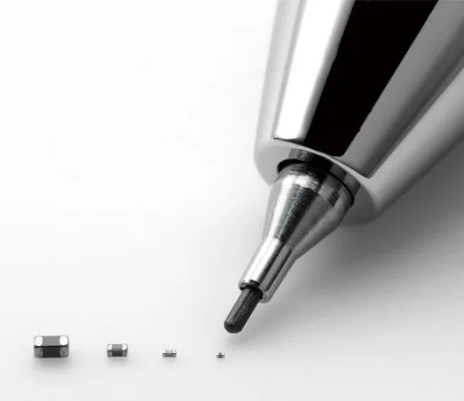
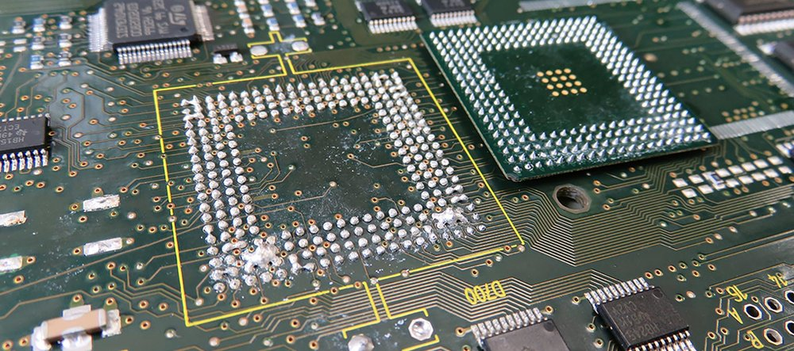
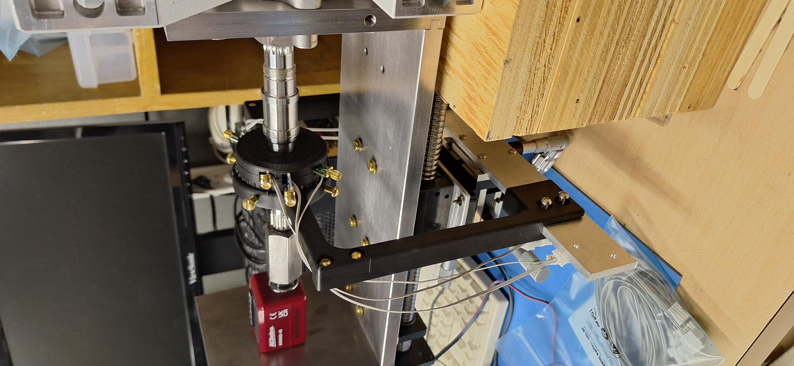
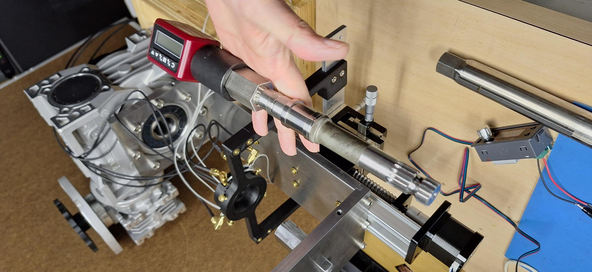
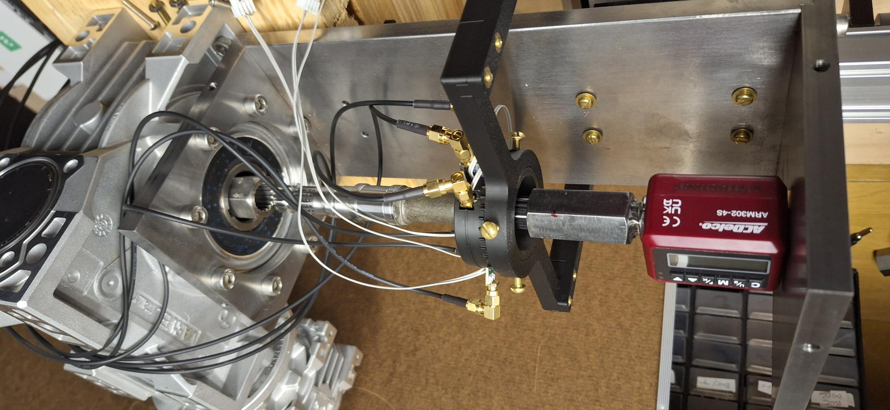
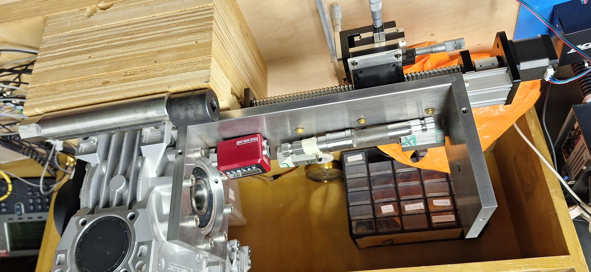
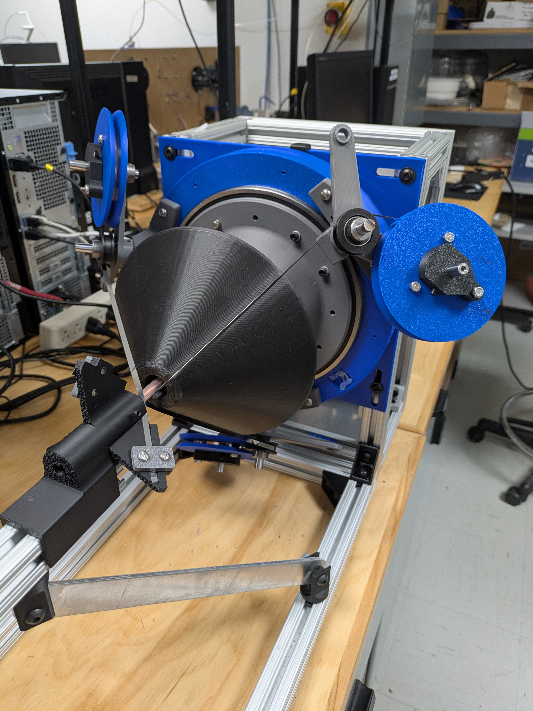
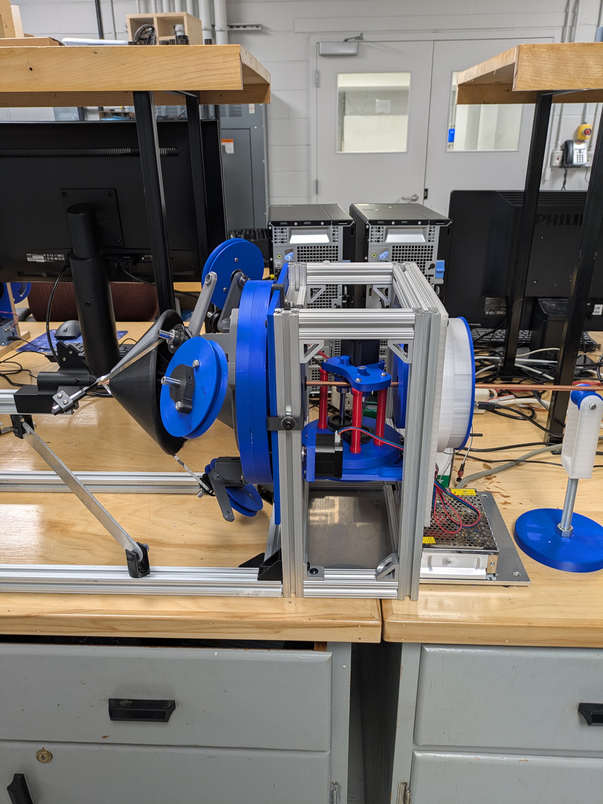

PORTRAIT DE CARRIÈRE
YANIK LANDRY-DUCHARME - TECHNOLOGUE PHYSIQUE
DOSSIER DE CANDIDATURE COMPLET
DOSSIER DE CANDIDATURE : PROMOTION À LA CLASSE SENIOR
Candidat : Yanik Landry-Ducharme
Technologue physique - École Polytechnique de Montréal
16 juin 2026
1. Lettre d'intention
OBJET : Candidature pour l'obtention du statut de Technicien Senior
À l'attention des membres du comité d'évaluation
C'est avec une grande fierté et un engagement renouvelé envers notre institution que je vous soumets mon dossier pour l'accès au niveau senior. Fort de plus de 30 ans d'expérience en technologie physique avec spécialisation en électronique de pointe, dont neuf années au service de Polytechnique Montréal, j'ai évolué bien au-delà des fonctions techniques usuelles pour devenir un partenaire stratégique de la recherche, de l'enseignement et des opérations.
Expert interdisciplinaire, je suis devenu un pivot important à Polytechnique Montréal. Mon parcours démontre une capacité unique à naviguer entre la mécanique lourde, l'électronique de pointe et la gestion d'infrastructures complexes. Au-delà de l'excellence technique, j'agis comme un partenaire stratégique pour les chercheurs, optimisant les activités financières et de recherche, et garantissant la continuité de la recherche et de l'enseignement par des interventions critiques et bénévoles.
Expertise particulière
Mes formations particulières sont en conception assistée par ordinateur sur des plateformes professionnelles en mécanique et en électronique (SolidWorks, Orcad et Altium). Le fait d'avoir ces expertises combinées, jumelées à l'impression 3D en une seule personne, me permet de prendre en charge les projets les plus complexes et de les mener à bien.
J'ai suivi plusieurs des formations offertes par Polytechnique: SST, RCR, professionnelles, programmation, cariste... Sur le plan personnel, je fais de la mécanique automobile depuis mes 18 ans et j'imprime en 3D depuis quelques années. Comme mentionné dans la section Curriculum Vitae ci-après, j'ai des expériences qui sortent de l'ordinaire, avec les plus grands centres de recherches et universités du monde. Par exemple, l'expérience PICASSO (étude de la matière sombre), qui m'a conduite au Sudbury Neutrino Observatory à plus de 7000 pieds sous terre dans le laboratoire ultra propre SNOlab. J'y ai fait une formation de mineur et l'installation des circuits sur lesquels j'avais travaillé.
Je suis aussi le seul technicien de Polytechnique à souder les pièces électroniques ultraminces et très miniaturisées.
Une expertise multidisciplinaire unique
Ma valeur ajoutée réside dans ma capacité à naviguer entre la mécanique lourde, l'électronique de précision, la fabrication additive et le contrôle de procédés. Mon expertise en électronique est une ressource rare et essentielle, permettant de sauver des équipements critiques et d'éviter des coûts majeurs. Qu'il s'agisse de concevoir une tour d'impact en un temps record, de mettre au point des chambres thermiques sécurisées, ou bien de concevoir des mécanismes complexes et asservis, j'apporte des solutions là où les standards industriels s'arrêtent.
Un leadership opérationnel et stratégique
Le poste de senior exige une vision globale de nos infrastructures. J'ai démontré cette capacité en pilotant de manière autonome l'aménagement du local J-5129 et en assurant la gestion technique du site de Polynov-Anjou. Mon sens de la négociation a permis d'optimiser nos budgets, notamment par l'obtention de crédits significatifs pour l'acquisition de parcs d'imprimantes 3D industrielles très spécialisées. Mon rôle est également pédagogique: je suis devenu une étape de consultation incontournable pour les étudiants gradués, veillant à ce que la réalisation de leurs montages expérimentaux soit à la fois performante et sécuritaire.
Un engagement indéfectible envers la communauté
Mon implication dépasse largement le cadre de mes fonctions régulières. Ma présence sur site durant la crise de la COVID-19 pour assurer la production de dispositifs médicaux, ainsi que mon implication dans des comités de SST et mes nombreuses interventions bénévoles pour dépanner des laboratoires hors de mon secteur, témoignent de ma loyauté envers Polytechnique. Mon action proactive en SST – de la centralisation des risques chimiques à la conception de dispositifs de protection sur mesure – démontre que je place l'intégrité de nos équipes au cœur de mes priorités.
En conclusion, ma candidature à la classe senior ne constitue pas seulement une reconnaissance de mon expertise unique, mais confirme également mon rôle de pilier stratégique au sein de l'École. Mon implication et ma contribution, outre que pour la recherche elle-même, se reflètent dans la formation de chaque étudiant à la maitrise et au doctorat. Ceci et mon apport à la recherche contribuent au rayonnement de Polytechnique bien au-delà du baccalauréat en ingénierie.
Je suis convaincu de faire la différence et pleinement déterminé à poursuivre ce rôle essentiel au sein de l'École Polytechnique Montréal. Je vous remercie de l'attention que vous porterez à ma candidature et demeure à votre disposition pour toute précision.
Yanik Landry-Ducharme
Technologue physique
yanik.landry-ducharme@polymtl.ca
2. CURRICULUM VITAE (résumé)
Comme mon curriculum vitae en fait état, j'ai principalement travaillé en électronique, mais j'ai aussi enseigné une Attestation d'études collégiales (AEC) à raison de 34 heures par semaine pendant 10 mois. La conception et l'enseignement des cours, la supervision des projets, ainsi que l'évaluation de 22 élèves, m'étaient confiés. En tant que consultant externe, j'ai défini les contenus de cours pour l'atteinte des objectifs ministériels : mathématique (géométrie et algèbre), électricité (courant alternatif et continu), électronique (logique et semiconducteurs).
GFH Design et Paxiom : Par la suite, j'ai occupé des postes en électromécanique (production et gestion technique d'usine de production - Olymel-Flamingo). Je fus technicien de test en électronique pour une compagnie de télécommunication satellitaire CVDS et technicien en électronique spécialisé chez Nortel Networks, où j'y faisais la formation des autres techniciens et collaborais de près avec les ingénieurs sur le produit phare de la Cie (OC-192).
Sur les seize années passées à l'UdeM, la majorité a été consacrée à la conception, la fabrication et le montage d'électroniques de tous niveaux. Je suis spécialisé dans les systèmes embarqués en acquisition de donnés à haut débit en temps réel pour des projets en recherche fondamentale et appliquée, lors de collaborations internationales provisionnées de fonds de plusieurs centaines de millions de dollars, comme entre autres SNO, DESY, KEK, le département d'astrophysique de l'UdeM, TRIUMF (cyclotron), Fermilab, et le CERN.
J'ai de l'expérience au niveau contrôle dans des domaines peu usuels comme l'intégration d'équipement électronique dans le cerveau de singes ou de chats (département de physiologie/neurologie de l'UdeM), de l'instrumentation de processus en physique des particules (accélérateur d'ions / Tandetron) et la conception de diverses cartes électroniques (Astrophysique de l'UdeM).
3. AUTRES FAITS SAILLANTS ET RÉALISATIONS
Professionnellement
- Travail sous les 7000 pieds sous terre en salle propre pour la recherche (j'ai reçu une formation de mineur).
- Compétence pour le soudage des BGAs (ball grid array: chips dont les centaines de contacts sont sous ces derniers) et soudage au four Reflow.
- Capacité à souder les plus petites pièces sur le marché.
Implication particulière
- Dans les postes subventionnés que j'ai occupés, j'ai toujours offert et pris en charge les achats et de désigner les bons UBR selon les étudiants et les projets.
- Lors du processus d'achat d'imprimantes industrielles à haute températures (Aon), j'ai intercédé en la faveur de Daniel Therriault, lui évitant de perdre un crédit-achat de 100 000$ et de rester pris avec une imprimante de vieille technologie.
- Premier et seul intervenant sur site durant la crise COVID-19 lors de la production de dispositifs médicaux en impression 3D et premier pour le déconfinement sécuritaire des laboratoires.
- En ce moment, je travaille pour plus de 4 professeurs, de 3 différents départements.
- Prochainement, je vais aussi réaliser des projets pour le Slow Poke.
Gestion d'Infrastructure
- Pilote de l'aménagement des locaux de recherches, dont le J-5129, l'atelier du A-234 et de l'unité Polynov-Anjou;
- Coordination autonome des corps de métiers et de la maintenance du bâtiment.
Continuité Opérationnelle
- Technicien pivot lors de la mise en place de la reprise des activités post-COVID19 à la Polytechnique et de façon autonome pour celle de Polynov-Anjou.
Leadership Pédagogique
- Consultant référent pour la validation de conception des projets d'étudiants aux cycles supérieurs et mentor pour les équipes techniques et professeurs.
Fait inusité
- Dans l'histoire polytechnicienne, je suis le seul technicien ayant passé directement d'un poste subventionné à un autre poste subventionné, résultant d'un intérêt accru pour obtenir mes services.
Personnellement
- Depuis mes 18 ans, je fais de la mécanique automobile : Pas seulement les freins, mais bien courroie de distribution (timming belt), suspension, joint de culasse (gasket de tête), rotule (ball join), roulement (bearing), table de suspension, carrosserie...
- J'ai aussi un bon bagage en construction, ce qui m'a permis de construire seul un solarium 4 saisons de 250 pi² annexé à ma maison, des salles de bains, d'autres pièces, ainsi que mon propre mobilier.
4. ARGUMENTAIRE PAR PILIER
4.1 Expertise distinctive
Interdisciplinarité des connaissances accrues de la micro-électronique (et de sa fabrication), à la conception mécanique et la fabrication additive en une seule personne : Formation professionnelle sur Altium (20 000$), formattion Orcad, et SolidWorks, impression 3D, C++, usinage et microcontrôleur [FS_3] [FS_4] [JC_4] [DT_4] [JPM_2] [DM_4] [DM_11] [NM_4] [EM_5];
Connaissance des circuits électroniques :
- Ma connaissance du prototypage et de la fabrication depuis le début du siècle (Atelier d'électronique - Laboratoire Technologique Avancé - Université de Montréal - Confluence), me confère une vision claire des embûches à éviter lors de la production des PCBs [FS_3] [JPM_3] [JPM_4] [JPM_1] [DT_4] [EM_4];
- Ayant travaillé à plusieurs projets internationaux d’envergures, je connais bien les structures de la communauté scientifiques liées à la conception des circuits électroniques [JC_6] [NM_1] [NM_2];
- Je suis particulièrement spécialisé dans la conception (routage) de circuits dont la communication à large bande est à très haut débit (j’ai même travaillé à mon compte pour Photons etc., car ils aimaient mon travail fait à l’UdeM) [FS_3] [JPM_7] [DM_4] [JPM_3];
- Je sais utiliser les BGA Rework Stations et les Reflow Soldering Stations. Je sais faire du prototypage de PCBs en gravure mécanique et électro-placage [FS_3] [JPM_6] [JPM_4] [JPM_3] [DT_4];
Connaissance de l’usinage et de l’assemblage :
- Ayant suivi des cours d’usinage et travaillé avec le Laboratoire Technologique de l’UdeM pendant 16 ans (Atelier d'usinage - Laboratoire Technologique Avancé - Université de Montréal - Confluence), j’ai la bonne « intention de design », minimisant coûts et pertes de temps [JC_8] [NM_5] [DT_4] [LLL_2] [DM_11] [NM_8]. Le technicien de cet atelier a reçu le prix Innovation 2026 de l’UdeM.
Habileté manuelle et exclusive :
- Depuis le départ de Maxime Thibault, je suis le seul technicien à l’École à pouvoir souder des puces électroniques 0201 (0.6mm x 0.3mm) et même 01005 (0,4mm x 0.2mm) [FS_3] [JPM_3] [JPM_4] [JPM_1] [EM_4];
- Lorsqu’il n’y a plus d’espoir, je suis particulièrement habile de mes mains et j’ai développé des techniques de réparations particulières en électronique [HDV_5] [HDV_3] [HDV_4] [JPM_5] [FS_7] [DM_2];
- Avec Fabrice Danet (technicien en GM), nous sommes les seuls techniciens de l’École à faire la pose de jauges de contrainte (Strain Gauge) [DM_3] [FS_3].
Esprit de synthèse et pensée hors des sentiers battus (SST) :
- J’ai rassemblé en un seul laboratoire (J-5135) toutes les activités impliquant les produits chimiques et les produits dangereux, et j’ai acheté et identifié un balais et porte-poussière par laboratoire, de sorte que les usagers ne répandent plus les contaminants d’une pièce à l’autre en promenant le balais contaminé [DM_8] [DT_17] [FG_5] [EM_7];
- Pour ce même laboratoire, j’ai fait l’achat d’un robinet à activation infrarouge pour que les usagers n’aient pas à retoucher la poignée avec leurs mains après l’avoir manipulé avec leurs gants;
- Toujours dans ce même laboratoire, j’ai acheté une horloge murale pour éviter que les usagers plongent leur main gantée dans leur poche pour voir l’heure sur leur téléphone;
- J’utilise souvent des produits du commerce pour les utiliser dans un autre but (réparation de contrôleur de moteur de Huu Duc Vo, brush plating de David Ménard) [HDV_3] [DM_6] [DM_2] [FS_7];
Installation industrielle :
- Installation de la boucle hydraulique grande échelle (Projet de Doosan de Njuki Mureithi) [NM_1] [AH_1] [NM_2] [NM_5];
- Installation de la pultrudeuse de Louis Laberge-Lebel [LLL_2] [LLL_7] [LLL_3];
- Installation du grand lit fluidisé de Gregory S. Patience [JC_2] [JC_13];
- Installation des grands fours rotatifs de Jamal Chaouki [JC_11] [JC_13] [JC_23];
Travail en salle propre sous terre : J’ai obtenu la formation de mineur pour pouvoir circuler le parcours de 1,7km sous terre qui sépare le monte-charge du puit situé à 7000’ sous terre, du laboratoire de SNO (Sudburry Neutrino Observatory) dans la mine d’INCO [JPM_8];
Formation de cariste : J’ai fait la formation et sa requalification pour pouvoir travailler avec le chariot-élévateur à Polynov-Anjou [LLL_3] [NM_5] [LLL_10] [JC_7] [MNS_1] [NM_5]. Selon l’instructeur, seul un employé, manœuvre de Polytechnique, m’égalait, me décrivant comme « un naturel »;
Communicateur : J’ai bâti, enseigné et évaluer une grande section d’une AEC (Attestation d’Études Collégiales) : mathématique (géométrie et algèbre), électricité (courant alternatif et continu), électronique (logique et semiconducteurs) [AH_10] [JPM_9] [NM_10];
Leadership : Je ne bouscule personne, mais lorsque la situation s’y prête, je démontre naturellement du Leadership [DM_7] [JC_15] [JC_17] [FG_7] [NM_7];
Gestion :
- Outre la gestion des UBR pour les achats des professeurs, j’ai géré les activités des laboratoires allant de 30 à 63 étudiants en périodes estivales (Daniel Therriault 30, Jamal Chaouki et Gregory S. Patience 63) [JC_16] [JC_25] [DT_6] [DT_21] [JC_17];
- Gestion autonome du site industriel d’Anjou [LLL_10] [LLL_11] [JC_7] [NM_7].
4.2 Rôle conseil et influence stratégique
Pivot central :
- Je suis un intermédiaire clé entre les chercheurs, les techniciens, les départements et les corps de métiers externes [FS_6] [LLL_7] [LLL_8] [LLL_9] [NM_10] [EM_1] [EM_9]. J’ai d’excellentes relations avec tous les employés de l’École et j’obtiens très souvent des faveurs [DM_1] [LLL_9]. Alors les projets se réalisent, et rapidement;
- Frédéric Sirois, David Ménard et Bianca Viggiano me consultent aussi pour la direction de leurs projets et l’organisation de leurs laboratoires [FS_6] [BY_4] [DM_2] [DM_7];
Conseil : Étant pluridisciplinaire, souvent, les professeurs et techniciens me consultent dans l’élaboration de leurs choix technologiques pour des projets de recherche ou de nouveaux laboratoires (enseignement et recherches) et pour leur certification à l’intérieur des murs de Polytechnique : [FS_7] [JC_14] [LLL_5] [BY_4] [FS_6] [EM_8]
- C’est d’ailleurs à la suite de services que j’ai offert à ces professeurs — Therriault, Sirois et Viggiano — qu’ils ont décidé d’ouvrir un poste subventionné dans l’optique d’obtenir mes services exclusifs [FS_9] [DM_10] [FS_2]. Selon le Pr. Sirois, « aucun autre technicien n’aurait pu me satisfaire ».
- J’ai déterminé tous les équipements d’impression 3D de nouvelle génération pour le LM² (imprimantes 3D au J-5129 et imprimantes 3D hautement spécialisées pour les matériaux exotiques — hautes températures — au J-5135) [DT_19] [DT_21] [DT_3].
- J’ai conseillé et fait la conception de plusieurs projets, dont la bobineuse de rubans supraconducteurs, conseillé le routage de circuit à haut courant de la source pulsée, la conception tridimensionnelle de circuits électroniques de sources électriques, conception et fabrication de la polling station, de la tour d’impact, de la station de couple élevé, l’organisation des laboratoires, etc… [FS_5] [DM_3] [DM_5] [DT_10] [DT_11] [DT_12] [DT_3]
- Ces demandes proviennent aussi de personnes issues d’autres département ou groupes de recherche : Même après avoir quitté le groupe de recherche, le professeur Therriault m’a souvent demandé de l’aide et des conseils (conseil de capacité électrique, de certification du broyeur de plastique, de modification du contrôleur de température, etc.) [DT_15].
- À la suite de mon retour en génie mécanique, le professeur Sirois m’a engagé de façon surnuméraire pour conseiller et accompagner ses élèves dans leurs projets, pendant 8 mois [FS_9] [DM_10].
- Dès mon arrivé en génie électrique, j’ai identifié les manques de services au pavillon principal et coordonné un troc d’équipements de quelques dizaines de milliers de dollars entre le Polygram, le pavillon principal et Lassonde pour répartir équitablement les équipements tout en veillant à ce que personne ne soit perdant dans la transaction [FS_10].
- Le coordinateur des services techniques de génie électrique (El-Mehdi Mojave) m’a demandé de projeter et réaliser la réhabilitation de l’atelier mécanique du A-234 et il m’intègre souvent dans ses stratégies d’adaptation des espaces, équipements et des activités techniques [FG_5] [FG_7].
Personne-ressource : Les élèves de Daniel Therriault devaient me consulter avant et pendant la conception de leurs projets (enceinte chauffante, multibuse, station 40 000 Volts…) [DT_8] [DT_20] [EM_6]. Il en va de même en ce moment pour ceux de Frédéric Sirois, Bianca Viggiano et David Ménard [BY_4] [FS_6] [DM_7].
4.3 Implication élevée et engagement communautaire
Bénévolat : Mon aide bénévole ne se résume pas au travail dans une organisation précise, mais plutôt à mes activités quotidiennes, où je travaille souvent en dehors de mes heures conventionnées et aussi sans rémunération, pour des étudiants, laboratoires et professeurs : J’ai très souvent, i.e. plus de la moitié du temps, dépassé de beaucoup mes heures de travail pour aider les gens [FS_8] [JC_18] [DT_13] [HDV_4] [NM_7] [JC_25]. Toutes ces heures n’étant pas rémunérées, ni même placées en temps accumulés.
Mon implication se fait beaucoup dans la formation des étudiants gradués et stagiaires, qui se retrouvent à faire rayonner l’École Polytechnique dans la société dans leurs recherches et sur le marché du travail : [DT_6] [JPM_9] [JC_17] [NM_10]
- Les témoignages d’étudiants de Polytechnique en maîtrise et au doctorat le confirment en une trentaine de citations, que l’on retrouve sur le site de Polytechnique [AH_18]. Certaines spécifiant ma contribution essentielle à leurs projets.
Loyauté, sens moral et abnégation : À mon arrivé à la Polytechnique, j’ai continué de supporter le laboratoire de physique subatomique de l’UdeM de mai à septembre 2017 (j’y faisais 20 heures de plus que les 35 heures à la Polytechnique) [JPM_10] [NM_11]. Lors de mes changements de postes, j’ai toujours proposé de diviser les 3 jours d’intégration des employés me remplaçant en 6 après-midis car c’était la meilleure chose à faire la section que je quittais [JC_22]. Bien sûr, je continu un support ponctuel bénévolement par la suite.
- À mon départ de génie électrique, j’ai fait une période continue de 8 mois de travail surnuméraire à raison de 7 heures par semaines en moyenne pour le professeur Frédéric Sirois [FS_9] [DM_10]. Toutes ces implications non obligatoires ont contribué à l’avancement des travaux en minimisant les effets délétères sur le parcours des étudiants et des recherches des professeurs.
- Pour pouvoir continuer à offrir mes services à Frédéric Sirois, David Ménard et Bianca Viggiano, j’ai accepté de perdre ma sécurité d’emplois, condition sine qua none pour le Service Talents et Culture de Polytechnique.
- Intégrité : J’ai dû m’élever contre deux projets d’un des professeurs pour qui j’ai travaillé à mon arrivé en 2017 [JC_21] : Le premier était tellement dangereux qu’il aurait dû être installé dans un champ isolé de toute population. J’ai donc arrêté ce projet qui se faisait dans les murs de Polytechnique. Le second était un plagiat flagrant de l’expertise que je détenais pour un projet très porteur (brevet à venir) d’un autre professeur de Polytechnique [JC_21].
Bénévolat au quotidien : Quand le temps me le permet ou que la situation l’exige, je m’implique et tente de corriger les non-conformités en SST [EM_7] :
- Je suis intervenu lors de la réfection du A-208 alors que les ouvriers travaillaient en pression positive au lieu de négative, ce qui faisait entrer de la poussière d’amiante dans les corridors [FG_3]. Personne, de l’ingénieur au dossier, au chef de la SST institutionnelle, ne voulait s’impliquer.
- J’ai fait des pressions régulières pendant 3 ans, en offrant des solutions, pour sécuriser le transport des bombonnes d’azote liquide dans l’ascenseur [FG_6].
- J’interviens dans les laboratoires qui ne me sont pas attribués si j’y vois un manquement à la SST : À quelques reprises, j’ai dû avertir des usagers de Polyfab (au pavillon principal) pour ne pas porter les EPI propres aux activités de machinage [DT_17] [DM_9]. La dernière fois fut la bonne car j’ai fait intervenir la SST de l’École.
- En 2023-24, j’ai fait beaucoup de tractations directement avec les instances de l’UdeM pour obtenir le J-5129.
- Une autre implication moins visible fut l’idée que j’ai eue et je partageais aux adjointes administratives, aux coordonnateurs, aux techniciens et à mon syndicat depuis environ 3 ans pour la création d’une unité de « techniciens volants ». De plus, ça permet de retenir les expertises, les employés qui perdent leur poste subventionné et ça évite du temps du STC pour l’embauche de temporaires. Bien sûr ce n’est pas moi qui aie négocié l’accord qui est survenu lors de la dernière convention collective des techniciens, mais je ne peux m’empêcher de penser que j’ai éveillé les différents partis à cette idée. Cette étape étant faite, je fais des maintenant tractations pour que Polytechnique se dote d’une coop d’équipement et de consommables techniques.
- Le message d’appui de Maud Cohen (Directrice Générale de Poly) — avec qui j’ai des échanges ponctuels, mais réguliers, à propos des opérations, des finances, des négociations syndicales et du climat de travail —, celui de Marie-Noël da Silva (Conseillère principale- projets stratégiques en santé et sécurité) et celui de Frédéric Gylbert (Superviseur des services d’opération et d’entretien technique), démontrent bien que mon implication s’exprime aussi en dehors des structures habituellement empruntées [MC_1] [MNS_1] [FG_1] [FG_7].
Bénévolat en comité :
- J’ai aussi eu ma part d’implication dans des comités classiques : Je me suis engagé dans deux (2) comités (machines dangereuses et produits chimiques) sur une période couvrant 2 ans.
- J’ai accepté de participer aux ateliers sur le climat de travail et, surtout, les ateliers d’enquêtes appréciatives visant à définir les pôles d’excellence du département de génie mécanique [JV_1] : En début d’année 2023, ce renouvellement représentait une situation délicate pour le département; l’enjeu était important pour la continuité et la qualité de ses activités du département. Je me suis porté volontaire malgré ma charge de travail déjà très élevée comme employé régulier subventionné pour Daniel Therriault. J’ai participé activement à tous les ateliers avec dévouement et abnégation [JV_2].
- Je me suis fortement impliqué lors de la pandémie de COVID19 [DT_16] [NM_3] [AH_17]. J’ai été le seul technicien à pouvoir réintégrer les locaux de Poly pendant une bonne période [LLL_8]. Bien avant que j’y prépare le retour des activités de recherches et d’enseignement, j’ai lancé la production maison d’impression de valves Charlotte et par la suite de supports de visière pour le CHUM. Cet état de fait rend compte de ma contribution au rayonnement de Polytechnique dans la société. J’ai aussi préparé seul le retour des activités de recherches à Polynov-Anjou [AH_17]. J’ai bien sûr continué le retour des activités dans les pavillons principal et JAB.
Offrir du soutien technique hors de son secteur pour dépanner d’autres équipes :
- Lorsque j’étais en génie électrique, je suis allé au LM² réparer une des nouvelles imprimante 3D (Prusa XL) que le technicien de Daniel Therriault n’arrivait pas à réparer [DT_14] [HDV_2].
- En ce moment, j’assiste deux stagiaires de Daniel Therriault en génie mécanique (alors que je suis subventionné en génie électrique) dans la réalisation de leur projet pour le LM².
- Comme mentionné dans la section 3.2, je suis souvent consulté pour des modifications de projets, pour mon conseil sur des certifications ou des capacités électriques. J’accompagne deux stagiaires de Daniel Therriaul dans leur projet de contrôle de la nouvelle enceinte chauffante.
- J’ai assuré sur une période continue de 8 mois le service en travail surnuméraire — à raison de 7 heures par semaines — pour le professeur Frédéric Sirois de génie électrique alors que j’étais en génie mécanique [FS_9] [DM_10].
- Il y a trois ans, j’ai réparé le contrôleur du professeur Huu Duc Vo sur mon temps personnel, alors que j'étais l'employé de Daniel Therriault, ce qui a permis une reprise des recherches dans la même journée [HDV_4] [HDV_3].
- J'ai été rappelé par le Pr. Vo, il y a peu de temps, pour réparer une autre partie de ce même contrôleur, alors que je travaille pour le Pr. Sirois. Un technicien de GM ayant conclu que la réparation d'un des circuits électroniques ne devait passer que par moi [HDV_5].
4.4 Contribution et optimisation du secteur
Maîtrise budgétaire :
- Négociation active d'un crédits-achat (100 000$) et choix des imprimantes du nouveau parc machines (Aon, Bambulab, Prusa).
- En charge des achats et des UBR : attribution des UBR selon les projets et étudiants (certains partagent plus d'un projet ou UBR);
Contribution à l'évolution des structures par une approche inventive et analytique :
- J'ai centralisé en un seul laboratoire (J-5135, Daniel Therriault) toutes les activités impliquant la chimie et les produits dangereux, et j'ai acheté et identifié un balais et porte-poussière par laboratoire, de sorte que les usagers ne répandent plus les contaminant partout en promenant le balai contaminé;
- Pour ce même laboratoire, j'ai fait l'achat d'un robinet à activation infrarouge pour que les usagers n'aient pas à retoucher la poignée avec leurs mains après l'avoir manipulé;
- Toujours dans ce même laboratoire, j'ai acheté une horloge murale pour éviter que les usagers plongent leur main gantée dans leur poche pour voir l'heure sur leur téléphone;
- J'ai conçu et fait fabriquer une hotte pour le nettoyage à l'isopropanol des pièces imprimées SLA (SST);
- J'ai conçu l'aménagement complet (physique, électrique, ventilation et équipements) du nouveau laboratoire J-5129 (que j'ai obtenu de l'UdeM en 2024 suite à moultes tractations);
- Après avoir analysé la possibilité de faire ajouter un drain de plancher sous la douche corporelle du corridor J-5100 et devant les coûts prohibitifs, j'ai acheté un tapis surélevant la personne sous la douche pour éviter que ses pieds ne trempent dans le produit chimique ainsi évacué de sur son corps, et pour éviter qu'elle ne se blaise en glissant;
- J'ai acheté des passe-fils et même fait déplacer des prises électriques pour éviter des situations dangereuses;
- J'ai organisé des zones de travail, dont une pour une expérience à plusieurs dizaines de milliers de Volts (cette section, bien que dans la même salle, est maintenant en retrait, avec marquage au sol et affiches de mise en garde), ainsi qu'à l'entrepôt d'Anjou [EM_10];
- Je me suis occupé (souvent seul et sans directive) du fonctionnement des installations qui étaient à Polynov, ainsi que du bâtiment lui-même (entretien ventilation, compresseur, chariot-élévateur);
Aide à la recherche :
- En tout temps, par le conseil, la réorganisation des lieux de travail, mon dévouement; un exemple récent : 43 heures supplémentaires - faites en 6 jours, dont la fin de semaine faites au début juin pour rencontrer des livrables, et mes nombreuses heures supplémentaires faites en étirant mes journées régulières pour soutenir les étudiants finissant plus tard que moi.
- Disponibilité flexible dès 6 h, permettant d'éliminer les temps d'arrêt étudiants et de prendre en charge commandes, designs et impressions en soirée et les fins de semaine, maximisant ainsi la rapidité et l'efficacité des processus en période creuse.
- Contribution directe à l'obtention de contrats industriels (SMR) par la qualité des infrastructures livrées (projet de Njuki Mureithi);
- Lorsque j'étais en génie électrique, je suis allé au LM² réparer une des nouvelles Prusa XL que le technicien de Daniel Therriault n'arrivait pas à réparer.
- J'ai effectué le « sauvetage » du contrôleur de moteur de Huu Duc Vo, grâce à mes compétences en électronique;
Gestion et entretien des espaces de travail et des équipements :
- J'ai fait l'achat et la supervision de l'installation d'armoires de laboratoire pour augmenter le rangement et la SST.
- Maintenance continue des imprimantes Raise 3D, Aon et du robot 6 axes, et voir au bon fonctionnement des activités des laboratoires (maintenance et achats) sous ma responsabilité;
- Optimiser les processus, réduisant les temps d'arrêt ou les coûts : Pour ne citer que quelques exemples, l'achat et ordonnancement de boulonneries distinctes, pour optimiser les activités du lab; L'achat d'imprimante 3D performantes pour Frédéric Sirois, Bianca Viggiano et le département de Génie Mécanique. Le choix et l'achat des équipements pour une station complète de soudage sous fond MAO-TIC en Génie Mécanique.
- J'ai planifié les espaces et les requis structurels selon les équipements et l'utilisation pour le nouveau laboratoire du 5129.
- J'ai fabriqué un chiffrier Excel, très exhaustif, des produits chimiques du laboratoire de Daniel Therriault.
Améliorer la sécurité ou l'efficacité des installations :
- Comme mentionné précédemment, j'ai reconfiguré les lab pour n'avoir qu'un seul lab avec produits chimiques afin d'augmenter la santé-sécurité. Ajout de bras articulé à la grosse Aerotech pour améliorer le passage sécuritaire. Marquage au sol [EM_10].
- Ajout de supports à manteaux/sarraus muraux dans le corridor, catégorisés et séparés, laissant plus de place dans les laboratoires et évitant l'empilement de sarraus souillés un par-dessus les autres.
- Mise en place de procédures et de normes comportementales propre à chaque laboratoire; exemple, en définissant un seul lab - J-5135 contenant des produits chimiques et dangereux, il est donc possible de porter des EPI moins contraignant dans les autres laboratoires adjacents. Ce qui renforce l'obligation d'en porter au J5135;
Avoir un historique constant de travail de qualité, reconnu par les usagers :
- Lors de mes tâches d'employé subventionné, j'ai toujours offert un service dépassant mes affectations et mes heures normales. Voire du temps accumulé, mais aussi du temps personnel pour assurer le bon fonctionnement des laboratoires ou l'avancement des étudiants.
- Comme mentionné par Frédéric Sirois, la qualité de mon travail fait en sorte que j'ai des demandes de plusieurs professeurs pour mes conseils et pour l'accomplissement de leurs projets.
Coordination de plusieurs quarts de métiers pour des travaux :
- Plusieurs exemple d'installation de machines et d'armoires murales parfois interdépartemental - à JAB. Comme je fédère les gens, plusieurs exemples de ménages collaboratifs au Principal et à Anjou.
Valeur élevée :
- Être indispensable lors de périodes critiques (sessions d'enseignement, projets de recherche, urgences techniques) : J'ai toujours offert de la continuité aux professeurs lorsque je changeais de poste, allant même jusqu'à travailler bénévolement et en temps supplémentaire que j'ai offert à rémunération à temps simple... ce n'est pas purement du bénévolat, mais en parti - entre autres pendant 8 mois, à raison de 7 h/sem, pour Frédéric Sirois alors que j'étais dans un autre département.
- Par trois (3) fois, à la suite de mes services, un professeur m'a consulté avant d'offrir un poste subventionné pour que l'affichage me cible particulièrement [EM_3];
- Fait particulier : on m'a dit que c'était la première fois qu'un technicien passait directement d'un poste subventionné à un autre poste subventionné. Ce qui démontre un intérêt élevé pour mes services [EM_2].
[N.B. Ce n'est pas mon habitude de me glorifier, mais l'exercice de candidature lors d'une promotion n'est pas un acte d'humilité. Le tout étant très factuel, je suis à l'aise de les citer dans cette demande pour le titre de senior.]
CURRICULUM VITAE
LETTRES DE RECOMMANDATION & APPUIS INSTITUTIONNELS
Touchez ou cliquez sur un fichier pour l'ouvrir.
Points clés : Reconnaissance institutionnelle, engagement et contribution stratégique.
 Échange Directrice Générale
🤝 🛠️
Échange Directrice Générale
🤝 🛠️
Professeur Frédéric Sirois (Génie Électrique)
Professeur Daniel Therriault (Génie Mécanique - LM2)
Jean-Pierre Martin
Professeur Njuki Mureithi (Génie Mécanique)
Professeur Jamal Chaouki (Génie Chimique)
Professeur Huu Duc Vo (Aérothermique)
Professeur David Ménard (Génie Physique)
Abdallah Hadji
El Mehdi
Bahman Yari
Isabelle Nowlan
Professeur Louis Laberge-Lebel (Génie Mécanique)
Monsieur Frédéric Gylbert (Sécurité institutionnelle)
Marie-Noël da Sylva (Sûreté Institutionnelle)
Professeur Jérôme Vétel (Génie Mécanique)
Appui de la Directrice Générale : Maud Cohen
RÉALISATIONS & DISTINCTIONS (EN IMAGES)
🔧 Expertise Distinctive (Soudage de précision)
Soudage et reprise de composants de haute précision.

Soudage de composants 0201 (0.6mm x 0.3mm)

Soudage BGA de haute précision

Station de soudage par refusion automatisée

Station de reprise pour composants SMD/BGA
⚙️ Assemblage de circuits complexes
Conception et assemblage de circuits d'acquisition haute performance.

Collector V1.3

Mezzanine 32x50MHz

TIG 1GHz (MB)

TIG 1GHz

Système TIG 10
⚡ Systèmes embarqués & Haute Tension
Contrôleurs et intégration de systèmes de puissance.

Contrôleur Haute Tension
🌊 Boucle Hydraulique Doosan
Installation et maintenance de la boucle expérimentale.

Installation de la structure

Tech à l'oeuvre

Installation de la boucle
🌡️ Contrôleur de température
Lit et enceinte chauffante pour fabrication additive.

J-5131 Control
🔩 Station de couple
Conception et assemblage du banc d'essai.

Vue d'ensemble

Axe et capteur

Montage mécanique

Banc d'essai
🔥 Four Rotatif & Échantillonneur

Four rotatif 1
Four rotatif 2

Chambres

Proposition (Croquis)

Mélangeur - Proposition (Croquis)
🔄 Bobineuse de rubans supraconducteurs
Démonstration vidéo et photos du système de bobinage automatisé.

Bobineuse 1 - Vue d'ensemble du cône de guidage

Bobineuse 2 - Structure latérale et motorisation
🏢 Restructuration et Modernisation des laboratoires (SST)

Aménagement J-1 SST

J-5129 Organisation

J-5129 Postes de travail

J-5131 Poste de soudage

J-5133 Amélioration

J-5135 Achat Stratégique

Parc d'impression 3D AON